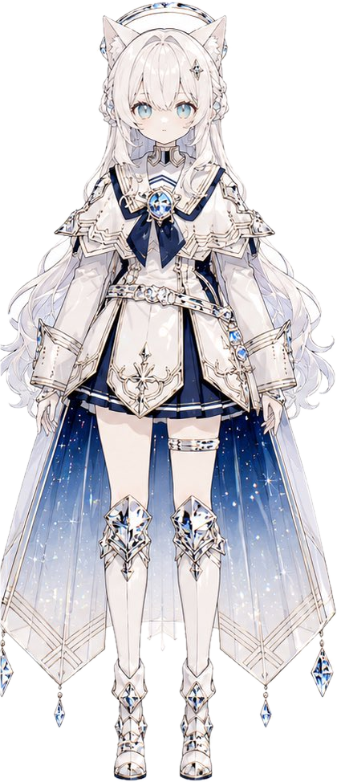
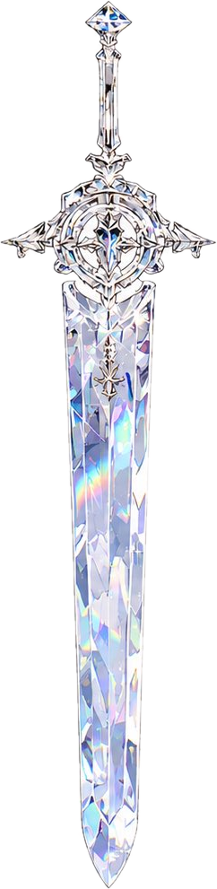

ルノワール
共鳴
0
その場で行動
選び直す
ターン終了
E
↶
↷
×
？
≡
World Map
ワールドマップ
アリア LV
1
しずく
0
王国復興
章の戦場
依頼
遊び
手帳
スキル強化
装備
仲間・絆
タイトル
地図はスクロールして移動できます
◆
ログ
オート
スキップ
メニュー
0

Color Resonance
夜空の黒と透明の剣
はじめから
つづきから
章をえらぶ
ワールドマップ
設定
「穢れ」と「その人の色」は、分けられるか。
Color Resonance
画面にふれて、はじめる
音が鳴ります（ヘッドホン推奨）
×